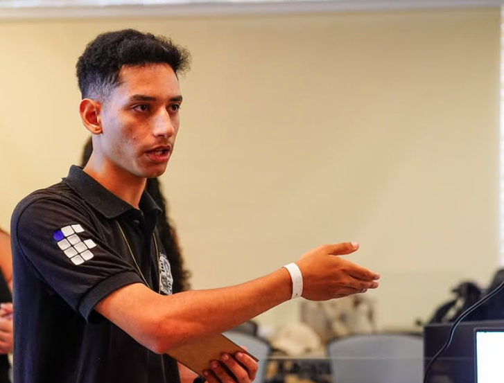

Pedro Henrique
Estudante de Engenharia de Software | IFPE
Sou movido pela curiosidade e pela vontade de transformar ideias em soluções reais por meio da tecnologia. Atuo em áreas como cibersegurança, desenvolvimento web, inteligência artificial e análise de dados.
Minha Trajetória
Conheça minha história e motivações
Desde o início da minha formação, busquei ir além do que era ensinado em sala de aula. Minha trajetória é marcada pela participação em projetos práticos e colaborativos. Tive a oportunidade de atuar no MouraTech, onde desenvolvi habilidades em trabalho em equipe, pensamento analítico e resolução de problemas em cenários reais.
Também participei do projeto AstroPose/CyberPose, que me permitiu explorar a interseção entre interação humana e tecnologia, além de conquistar uma posição no Top 10 do Hackathon NASA do estado de Pernambuco.
Na área de segurança da informação, meu foco está em monitoramento SOC e Blue Team, utilizando ferramentas como Wazuh, Suricata e MISP para detecção de ameaças e resposta a incidentes. Acredito que segurança e inovação caminham juntas.
Meu objetivo é me tornar um profissional versátil, capaz de contribuir tanto no desenvolvimento de sistemas seguros quanto na criação de experiências digitais que façam a diferença. Valorizo o aprendizado contínuo, a colaboração e o impacto positivo da tecnologia na sociedade.
"Acredito que um profissional completo precisa dominar tanto segurança quanto inovação. Construir soluções que conectam essas duas áreas é o que me motiva todos os dias."
Marcos da Jornada
Os momentos que definiram minha trajetória
Objetivos Profissionais
Para onde estou direcionando minha carreira
Minha Filosofia
O que me guia como profissional
A tecnologia é uma ferramenta poderosa para transformar realidades. Meu compromisso é usá-la com responsabilidade, criatividade e paixão, construindo pontes entre segurança e inovação para criar um futuro digital mais seguro e acessível para todos.